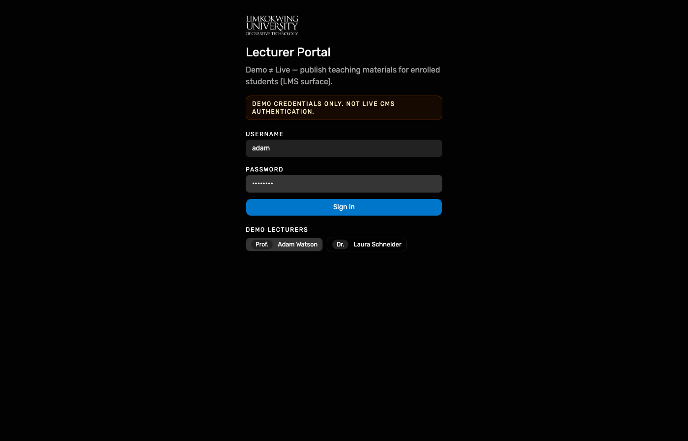
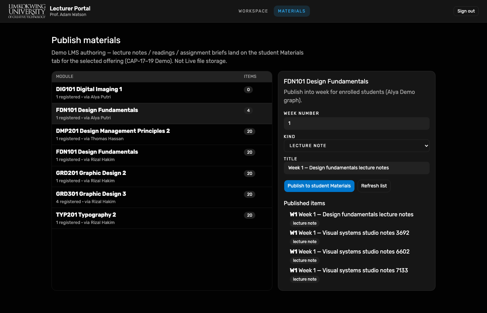
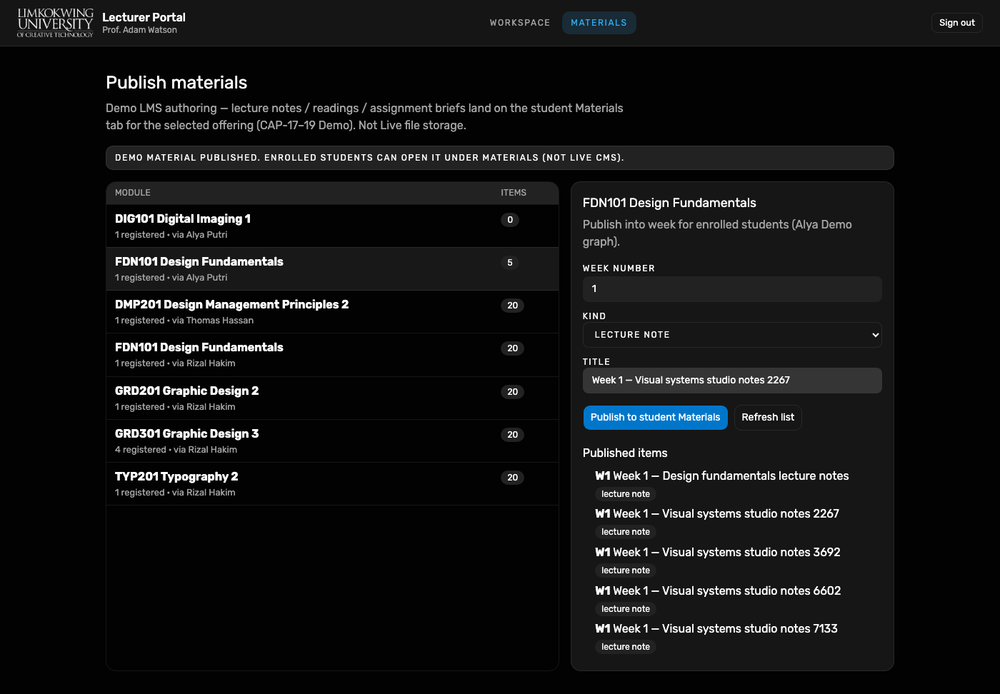
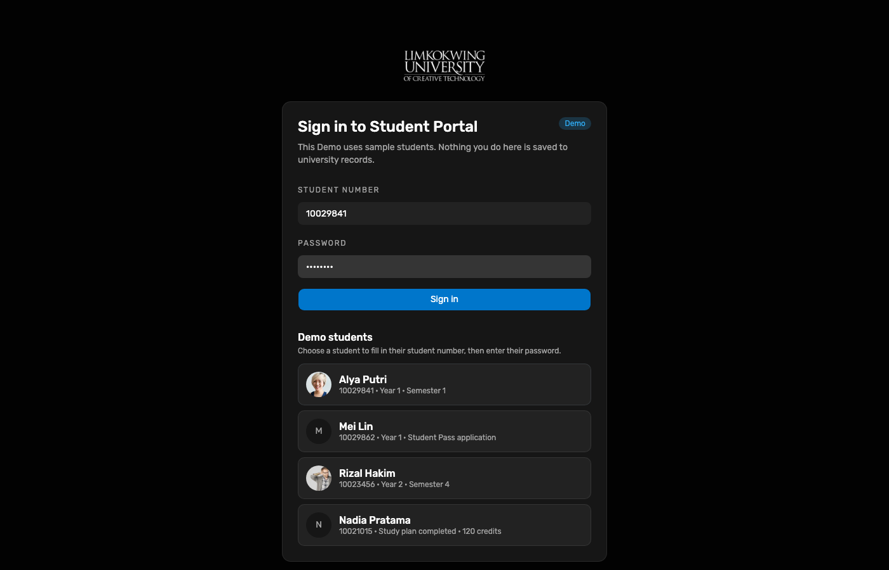
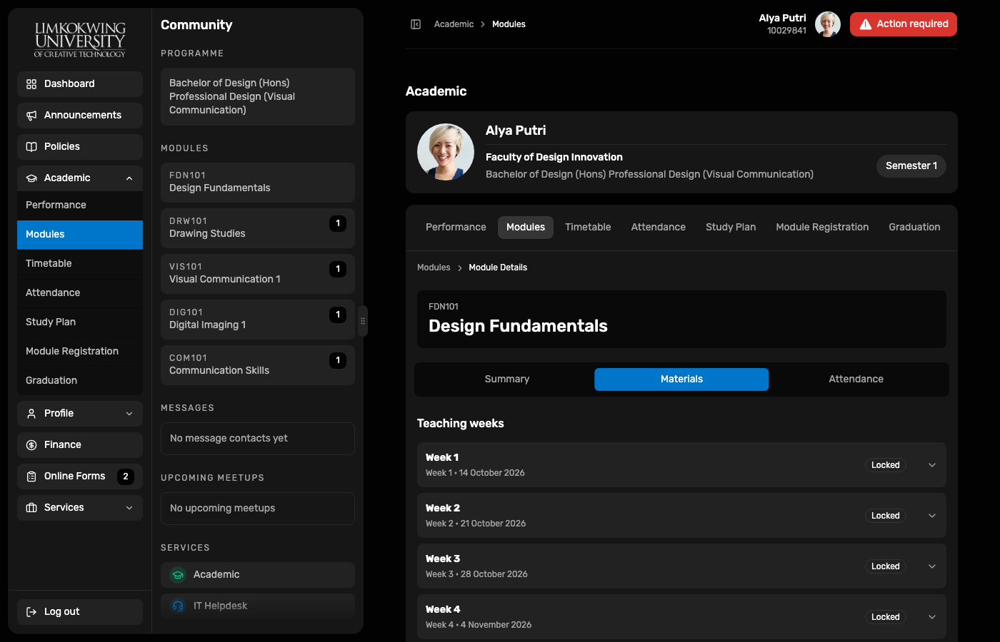
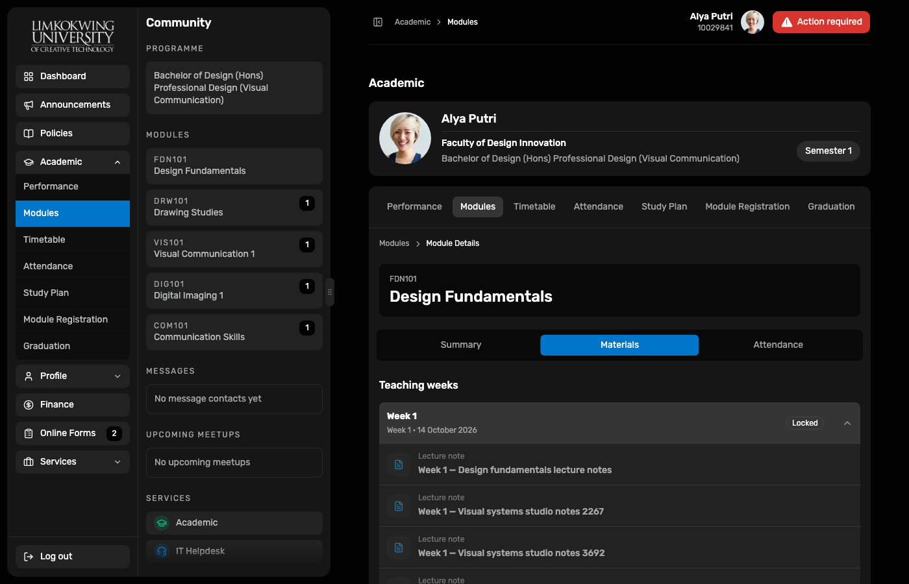
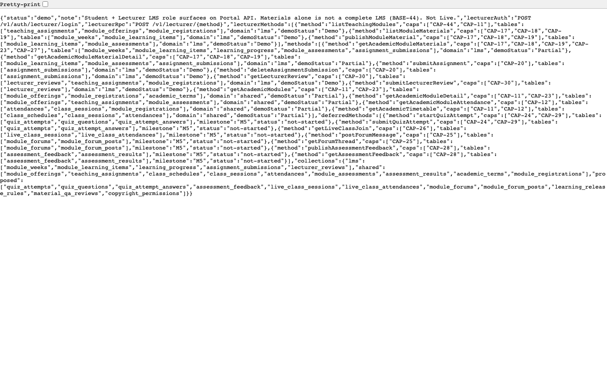

Demo lecturer Adam selected; Portal API lecturer login.

Working Group · End-to-end Demo test
Hosted Demo walkthrough (11 Oct 2026). After unit enrolment, Prof. Adam Watson publishes FDN101 lecture notes; Alya opens Academic → Modules → Materials. Demo ≠ Live — not a complete LMS (BASE-44).
Lecturer Portal Demo auth (POST /v1/auth/lecturer/login) and RPC
(publishModuleMaterial) write learning items onto Alya’s enrolled FDN101 offering.
Student Portal Materials shows teaching weeks for that offering. Week rows may show
Locked until the week’s availableFrom (Demo calendar) — publish still succeeds.
| Surface | URL | Account |
|---|---|---|
| Lecturer Portal | raisd-lecturer-portal.vercel.app | adam / Prof. Adam Watson |
| Student Portal | raisd-student-portal.vercel.app | Alya 10029841 |
| Portal API LMS meta | /v1/meta/lms | Catalogue (Demo) |
Passwords via Demo Keychain Open filled. Not Live CMS / BASE-44 complete LMS.
Demo lecturer Adam selected; Portal API lecturer login.

Teaching allocations with registered students (incl. Alya FDN101 / DIG101).

FDN101 Design Fundamentals selected for publish.

Success banner; published items list includes Week 1 lecture notes.

Alya Putri 10029841 after Faculty unit enrolment.

Module Details → Materials tab with teaching weeks (LMS student surface).

Weeks may remain Locked until Demo availableFrom; lecturer publish is already on the graph.

GET /v1/meta/lms lists student + lecturer Demo methods (BASE-44 incomplete).

adam → Materials → FDN101 → Publish lecture note.
node docs/reports/e2e-student-learning-lms-2026-10-11/capture.mjs